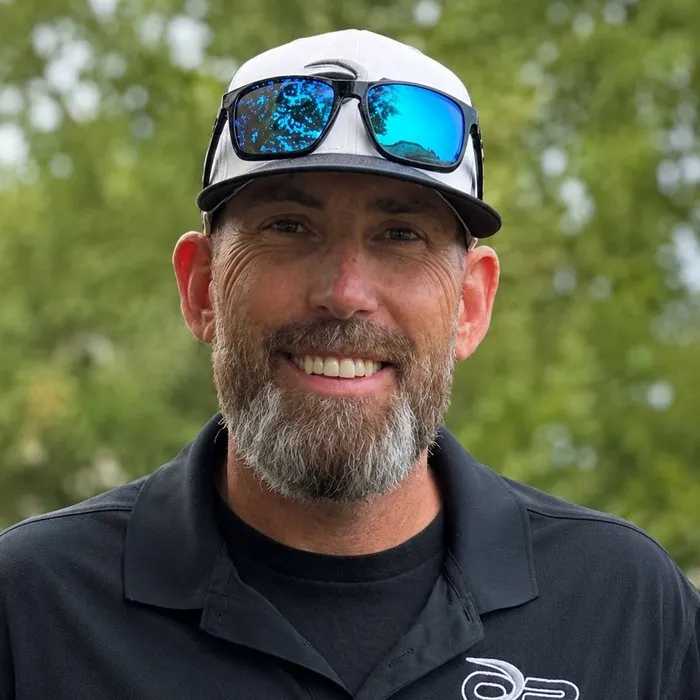
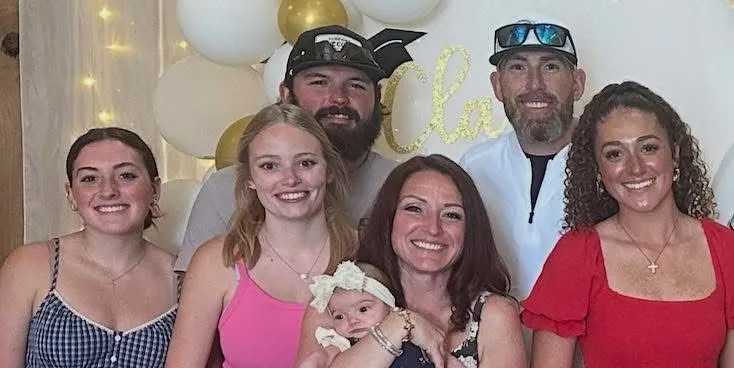

Founding leadershipSince 2016
David Trackwell
Owner / PresidentDavid founded One Point Construction after years of learning the business from the ground up — estimating, project management, and operations — and built it into a company capable of taking on projects hundreds of miles from home. He's still hands-on today: bidding jobs, managing relationships with general contractors, and staying close to what's happening on every project.
For David, relationships come before the next job — and that shows most when a project doesn't go according to plan.
“Construction doesn't always go perfectly. How you communicate, respond, and take care of people when something goes wrong says more about a company than when everything goes right.”
David Trackwell, Owner / President

Outside of work, David's coached travel softball with the Beverly Bandits for nearly a decade, helping dozens of young athletes earn Division I scholarships along the way. Family comes first — from watching daughter Addisyn begin her own D1 softball career at Louisville, to being a first-time grandpa.